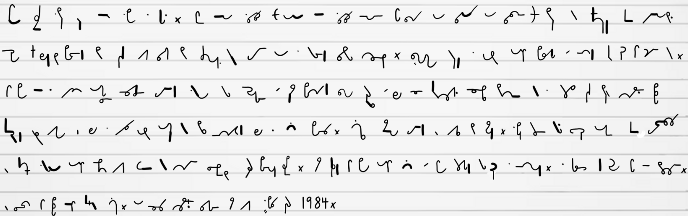

"The-thing that-he-was about to-do was-to open a diary. This was-not illegal (nothing was illegal since there were no longer any laws), but if detected it-was reasonably / certain that-it would be punished by death, or-at least by twenty five years in a forced labour camp. Winston fitted a nib into-the penholder and sucked it-to get the grease off. / The pen was an archaic instrument, seldom used even for signatures, and he-had procured one furtively and with some difficulty, simply because of a feeling that-the beutiful creamy paper / deserved to-be written on with a real nib instead of being scratched with an ink pencil. Actually he-was-not used to writing by hand. Apart from very short notes, it-was usual / to dictate everything into-the speak write which-was of course impossible for-his present purpose. He dipped the pen into-the ink [and] then faultered for just a second. A tremor had gone through his bowels. / To mark the paper was-the decisive act. In small clumsy letters he wrote: April 4th, 1984."
